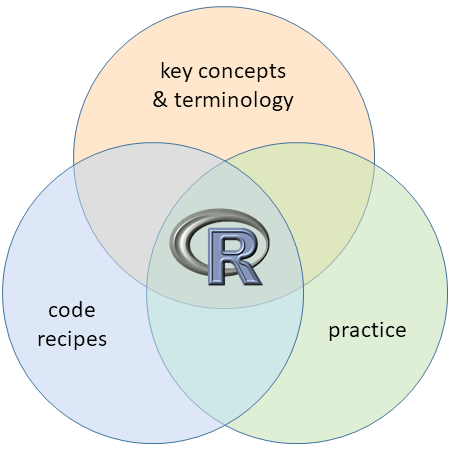
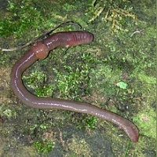
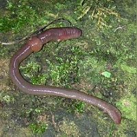

Spatial Data Analysis with R
Society for Conservation GIS, July 2020
Introduction 
Introduction

Home range estimator and spatial-temporal pattern analysis for wildlife tracking data
http://tlocoh.r-forge.r-project.org/

Data management utilities for drone mapping.
https://github.com/ucanr-igis/uasimg

Catalogs and manages drone image collections (sample)
Estimates footprints, computes overlap, exports flight area to Shapefile
Creates World Files for single images
Bring climate data from Cal-Adapt into R using the API
Functions to select, filter, and aggregate climate data spatially and temporally
Drone Mission Planner for Reforestation Monitoring Protocol
https://ucanr-igis.shinyapps.io/uav_stocking_survey/
Stock Pond Volume Calculator
https://ucanr-igis.shinyapps.io/PondCalc/
Calculator for Estimating Costs and Benefits of Medusahead Control
https://ucanr.shinyapps.io/medusahead_ipm/

Chat Window
General questions and comments
Breakout Room
One-on-one help. Unmute yourself or put your hand-up.
Post-workshop Q&A
Anything else!
1) Put in the chat window your:
i) name
ii) experience level with R (1-5)
iii) what do you want to do with R?
e.g., Andy, 2, analyze animal movement
2) Where are you from, and what is your favorite invertebrate?
☑ Can you hear me?
☑ Do you have a recent version of the Zoom client installed?
☑ Do you know how to mute and unmute yourself?
☑ View (and close) the chat window?
☑ Do you know how to share just one window?

☑ Do you know how to raise your hand?
☑ Ergonomics
☑ Two Screens (if possible)

+ foundational concepts
+ code recipes
+ working examples
+ practice
+ a good search engine
functional pRoficiency!


RStudio Cloud project for this workshop: https://rstudio.cloud/project/1463502


Click the little clipboard icon button to copy the lines below, the paste them into the console or script window in R.
Copy the following commands into a new script window, select them all, and cliick ‘Run’ (or ctrl + enter):
## Plot the batman logo
f1u <- function(x) ifelse ((abs(x) > 3 & abs(x) <= 7), 3*sqrt(1-(x/7)^2), 0)
f1d <- function(x) ifelse ((abs(x) >= 4 & abs(x) <= 7), -3*sqrt(1-(x/7)^2), 0)
f2u <- function(x) ifelse ((abs(x) > 0.50 & abs(x) < 0.75), 3*abs(x)+0.75, 0)
f2d <- function(x) ifelse ((abs(x) > -4 & abs(x) < 4), abs(x/2)-(3*sqrt(33)-7)*x^2/112-3 + sqrt(1-(abs(abs(x)-2)-1)^2), 0)
f3u <- function(x) ifelse ((x > -0.5 & x < 0.5), 2.25, 0)
f4u <- function(x) ifelse ((abs(x) > 1 & abs(x) <= 3), 6 * sqrt(10)/7 + (1.5 - 0.5 * abs(x)) * sqrt(abs(abs(x)-1)/(abs(x)-1)) - 6 * sqrt(10) * sqrt(4-(abs(x)-1)^2)/14, 0)
f5u <- function(x) ifelse ((abs(x) >= 0.75 & abs(x) <= 1), 9-8*abs(x), 0)
fu <- function (x) f1u(x) + f2u(x) + f3u(x) + f4u(x) + f5u(x)
fd <- function (x) f1d(x) + f2d(x)
bm <- function(r,x) ifelse(r%%2==0, fu(x), fd(x))
opar <- par(bg="#02233f", mar=c(0,0,0,0))
plot(x=seq(-7,7,0.065), y=Vectorize(bm)(1:216, seq(-7,7,0.065)), col="#999900", type="l", lwd=3)
par(opar)(source)

 
